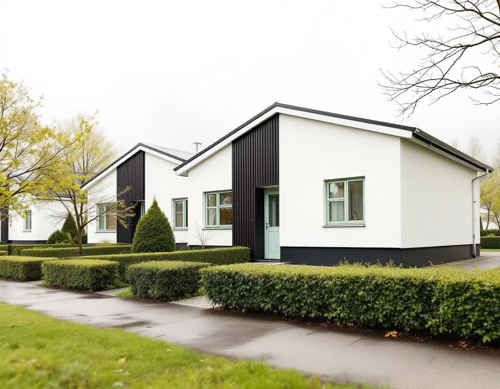
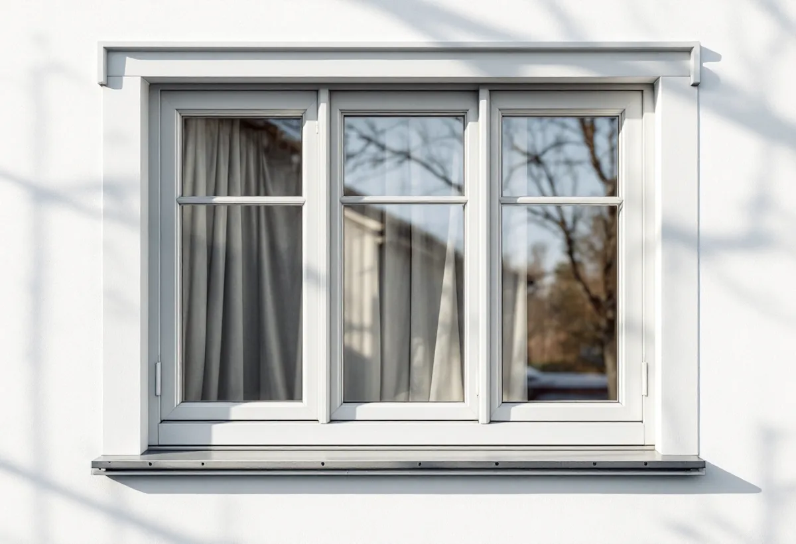
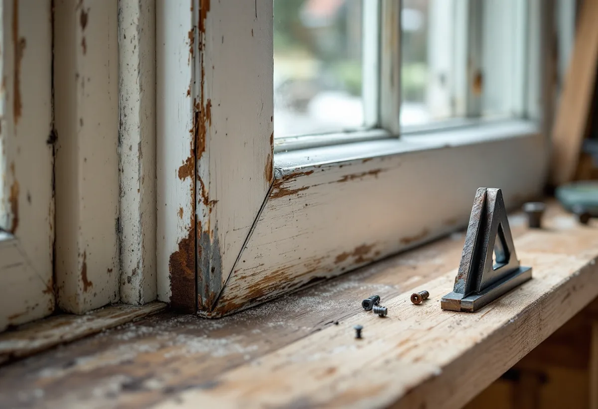

Platsbesök
Vi öppnar varje båge och sidofönster och känner efter röta under beslag och i fogar.
I Apoteksskogen byggdes på 1960-talet en hel grannskapsenhet med punkthus, lameller och kedjehus i en våning. Geal Entreprenad AB renoverar fönster i Upplands Väsby och ser till att bågarna i ett kedjehus fortsätter att stämma med grannhusens, både i kulör och utförande.

Kommunens kunskapsunderlag för kulturmiljö beskriver Apoteksskogen som ett större bebyggelseområde som byggdes ut under 1960-talet, med kedjehus, lameller, punkthus och ett mindre stadsdelscentrum. Området planerades som en så kallad grannskapsenhet och bedöms tillsammans med Sigma som ett särskilt värdefullt bebyggelseområde enligt plan- och bygglagen 8 kap. 13 §. Kedjehusområdet väster om Hammarbyvägen skiljer sig från resten genom att vara lågt och tätt, med markbostäder och egna trädgårdar. Husen har en våning och står sammankopplade i vinkel, med plats för garage och bil emellan.
Fasaderna är slätputsade i vitt med mörkmålad sockel, och mot taket löper ett svartmålat fasadband av stående träpanel. Taken har flack pulpetform och var från början täckta med papp. Fönstren var enligt underlaget ursprungligen ljust grå eller gröna och av enluftstyp med ett sidofönster, och bland bilderna finns ett hus med välbevarad fasad och grönmålade fönster.

Vägledningen för Apoteksskogen och Sigma säger att bebyggelsen ska underhållas som enhetligt utformade grupper inom den större helhetsmiljön, med respekt för ursprungliga materialkombinationer. Den karaktärsmiljö som kommunen kallar radhus och kedjehus från 1960–70-talen beskrivs på samma sätt: enhetlig färgsättning och utformning av fasaddetaljer per bebyggelsegrupp är ett bevarandevärt drag, och områdenas färgskalor ska bibehållas och underhållas.
När ett kedjehus renoveras för sig berör fönstren därför hela längans uttryck. Innan vi målar skrapar vi fram de äldsta färglagren på bågarna och jämför med grannhusen, så att det går att se om fönstren fortfarande har en grå eller grön ton eller har fått en annan kulör senare. Huvudbågen och sidofönstret får samma förarbete och samma kulör. Gäller frågan i stället nya fönster, till exempel för bättre ljudisolering, finns mer under fönsterbyte i Upplands Väsby.
Riksantikvarieämbetets skrift om fönster beskriver att rötskador uppstår där väta under lång tid har kunnat tränga in i virket och bara torka ut långsamt, och att det finns ett samband mellan röta och rost på skruvar och beslag. De omfattande skador som har visat sig på 1960- och 70-talens fönster beror enligt skriften även på olämpligt lösta konstruktionsdetaljer. Bågarna är ofta skadade under hörnbeslagen och i fogarna, och därför räcker det sällan att bara byta det nedre bågträet.
Vid mindre skador vid ett vinkelbeslag kan skruvhålen borras upp och pluggas med nytt virke, och skadade partier kan halvsulas så att bara de yttre delarna ersätts. Innan beslagen lossas mäts bågens diagonaler, så att formen inte ändras när den sätts ihop. Länsstyrelsernas blad om fönster tillägger att rostiga beslag oftast går att renovera. Vi rostskyddsbehandlar dem och skruvar tillbaka dem i friskt virke.
Kitt från den här tiden behöver undersökas innan det tas bort. Boverket skriver att det sannolikt finns asbest någonstans i en byggnad som är uppförd mellan 1940 och 1980, och fönsterkitt finns bland exemplen. Energiguiden påpekar att kitt kan innehålla asbest, vilket bör hanteras enligt arbetsmiljöreglerna. Vi tar därför prov innan vi skrapar ur kittfalsarna.
Upplands Väsby kommun skriver att en- och tvåbostadshus i normala fall inte behöver bygglov för fasadändringar, som en ny kulör. Inom ett kulturhistoriskt särskilt värdefullt område krävs däremot bygglov för fasadändringar, och kravet på varsamhet gäller oavsett lovplikt. En anmälan behövs om nya fönster innebär ingrepp i stommen. En renovering där bågarna behåller form och kulör är underhåll. Om målning av puts läser du mer under målare i Upplands Väsby och om fönsterbyte i stort under fönsterbyte.

Vi öppnar varje båge och sidofönster och känner efter röta under beslag och i fogar.
Kittet provas för asbest och färglagren skrapas fram för att se ursprungskulören.
Lagning, kittning och målning står var för sig, fönster för fönster.
Skadat virke halvsulas, beslag rostskyddas och skruvas i friskt trä.
Linoljekitt i falsen och tunna strykningar i den kulör husgruppen har.
Vi går igenom fönstren med dig och justerar där en båge tar emot.
Skatteverket räknar reparation och målning av fönster i ett småhus som rotarbete. Är ditt kedjehus en bostadsrätt – Skatteverket nämner att även ett radhus kan vara det – ger bara arbete på insidan av fönstren avdrag, till exempel nytt glas i den inre bågen, tätningslist eller målning av insidan.
Avdraget är högst 30 procent av arbetskostnaden, högst 50 000 kr per person och år och högst 75 000 kr tillsammans med rutavdrag. Det är bara arbetskostnaden som ger avdrag. Vi drar avdraget direkt på fakturan.
Antalet fönster och sidofönster, hur mycket virke som behöver bytas vid beslag och fogar och om kittet måste saneras påverkar mest. Efter ett gratis platsbesök får du ett skriftligt kostnadsförslag.
Byta eller renovera fönster.
Fönsterbyte i Stockholm →Takbyte, takbesiktning och plåtarbeten.
Takläggare i Upplands Väsby →Bollstanäs, Vilunda och Runby.
Takrenovering i Upplands Väsby →Potten, VA-avgiften och Bollstanäs.
Attefallshus i Upplands Väsby →Radhus, suterräng och samfälld VA.
Badrumsrenovering i Upplands Väsby →Karta, VA och tomtgräns.
Byggföretag i Upplands Väsby →Sekelskiftesvillorna längs Gamla vägen.
Fasadmålning i Upplands Väsby →Radhus från 70-talet och hus från bomässan.
Fasadrenovering i Upplands Väsby →Inflygning, trafik och tystare fönster i Väsby.
Fönsterbyte i Upplands Väsby →Kedjehus, suterräng och radon.
Golvläggare i Upplands Väsby →Slipa trägolvet i radhuset på platta.
Golvslipning i Upplands Väsby →Radhus, kedjehus och atriumhus.
Köksrenovering i Upplands Väsby →Radhus, kedjehus och villor i Väsby.
Målare i Upplands Väsby →Rännor, stuprör och radhusplåt i Väsby.
Plåtslagare i Upplands Väsby →Altan, plank och förråd vid radhus och kedjehus.
Snickare i Upplands Väsby →Nytt tak, solceller och väderradarn.
Takbyte i Upplands Väsby →Radhusen och plasttapeten.
Tapetsering i Upplands Väsby →Radhus, kedjehus och utpekade områden.
Tillbyggnad i Upplands Väsby →Äldre villor, radhus och varsamhet.
Totalrenovering i Upplands Väsby →